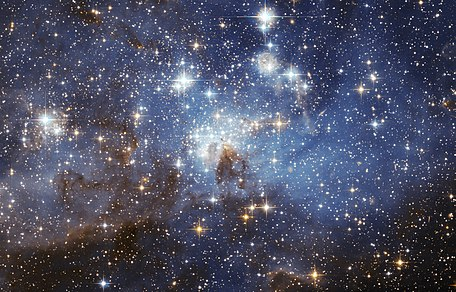

The Sun is the star at the center of the Solar System. It is a nearly perfect sphere of hot plasma, heated to incandescence by nuclear fusion reactions in its core, radiating the energy mainly as visible light and infrared radiation. It is by far the most important source of energy for life on Earth. Its diameter is about 1.39 million kilometres (864,000 miles), or 109 times that of Earth. Its mass is about 330,000 times that of Earth, and accounts for about 99.86% of the total mass of the Solar System.[20] Roughly three quarters of the Sun's mass consists of hydrogen (~73%); the rest is mostly helium (~25%), with much smaller quantities of heavier elements, including oxygen, carbon, neon, and iron.. CLICK FOR MORE

Earth is the third planet from the Sun and the only astronomical object known to harbor life. About 29% of Earth's surface is land consisting of continents and islands. The remaining 71% is covered with water, mostly by oceans but also by lakes, rivers and other fresh water, which together constitute the hydrosphere. Much of Earth's polar regions are covered in ice. Earth's outer layer is divided into several rigid tectonic plates that migrate across the surface over many millions of years. Earth's interior remains active with a solid iron inner core, a liquid outer core that generates Earth's magnetic field, and a convecting mantle that drives plate tectonics. CLICK FOR MORE

The Moon is Earth's only proper natural satellite. It is the fifth largest satellite in the Solar System, larger than any dwarf planet and the largest natural satellite in the Solar System relative to the size of its planet, at a quarter the diameter of Earth, comparable to the width of Australia.[13] The Moon orbits Earth at an average lunar distance of 384,400 km (238,900 mi),[14] or 1.28 light-seconds. Its gravitational influence produces Earth's tides and slightly lengthens Earth's day. The Moon is a differentiated rocky body; has a surface gravity of 0.1654 g, about one-sixth of Earth's; and lacks a significant atmosphere, hydrosphere or magnetic field. A planetary-mass moon, it has among satellites with a known density the second highest surface gravity and density in the Solar System after Jupiter's moon Io. CLICK FOR MORE

A star is an astronomical object consisting of a luminous spheroid of plasma held together by its own gravity. The nearest star to Earth is the Sun. Many other stars are visible to the naked eye at night, but due to their immense distance from Earth they appear as fixed points of light in the sky. The most prominent stars are grouped into constellations and asterisms, and many of the brightest stars have proper names. Astronomers have assembled star catalogues that identify the known stars and provide standardized stellar designations. The observable universe contains an estimated 1022 to 1024 stars, but most are invisible to the naked eye from Earth, including all individual stars outside our galaxy, the Milky Way. CLICK FOR MORE
Jupiter is the fifth planet from the Sun and the largest in the Solar System. It is a gas giant with a mass more than two and a half times that of all the other planets in the Solar System combined, but slightly less than one-thousandth the mass of the Sun. Jupiter is the third-brightest natural object in the Earth's night sky after the Moon and Venus. It has been observed since pre-historic times and is named after the Roman god Jupiter, the king of the gods, because of its observed size. CLICK FOR MORE